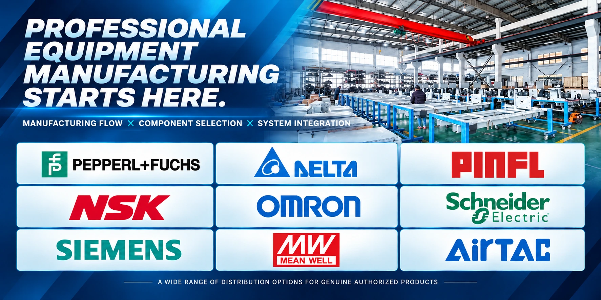

01｜科技整合 Technology Integration
整合清洗設備、控制系統、支付功能與營運管理需求，讓不同設備能夠在同一座洗車場中有效協作。
02 / ABOUT SHINOX
洗車產業正在改變。
從傳統人工洗車到自助洗車，再到自動化設備、智慧支付與遠端營運管理，市場對洗車服務的需求，已不再只是把車輛清洗乾淨，而是追求更有效率、更便利、更具彈性的洗車體驗。
ShinoX 洗諾克斯專注於洗車設備、系統整合與洗車場整體建置，致力於為創業者及洗車場經營者提供完整的設備與建場解決方案。
我們相信，好的洗車設備不只是硬體，更應該是一套能融入實際營運、符合顧客需求並具備長期維護價值的系統。
ShinoX 的服務涵蓋自助洗車設備、無接觸式自動洗車系統、周邊清潔設備、支付控制系統，以及洗車場規劃與工程整合。
我們從設備操作、空間利用、維修便利性與營運管理等角度思考，協助客戶依據不同場地條件、預算與經營目標，選擇適合的產品及系統配置。
對我們而言，設備銷售只是合作的開始。
真正重要的是設備安裝之後，是否能穩定運作、方便管理、滿足顧客使用需求，並支持經營者持續發展。
整合清洗設備、控制系統、支付功能與營運管理需求，讓不同設備能夠在同一座洗車場中有效協作。
從實際使用情境出發，重視設備操作便利性、場地動線、維修空間與整體配置，不為增加功能而忽略實際經營需求。
重視設備配置、安裝品質、操作說明及後續技術支援，協助經營者降低設備管理上的不確定性。
從初次諮詢、設備選擇、場地規劃到正式營運，ShinoX 希望成為客戶在洗車事業發展過程中可以持續合作的夥伴。
提供多功能自助洗車控制設備、清潔系統與周邊設備整合，適用於不同規模的自助洗車場規劃。
透過自動化清洗程序，整合高壓沖洗、清潔、護理與風乾等功能，為經營者提供不同於傳統人工洗車的營運選擇。
整合場地規劃、洗車格配置、機房、管線、棚架及設備安裝等需求，協助業主建立完整的洗車服務空間。
依設備方案導入不同收費與管理功能，提升顧客操作便利性，並協助經營者掌握營運狀況。
ShinoX 的目標，不只是提供更多設備，而是持續改善設備與營運之間的連結。
我們希望透過技術整合、實用設計與專業服務，協助更多創業者建立自己的洗車事業，也讓既有洗車場經營者擁有設備升級與營運優化的選擇。
ShinoX 洗諾克斯｜Car Wash Systems & Business Solutions
從設備到整場建置，為你的洗車事業提供完整解決方案。
了解事業方案 ↗
LET’S BUILD WHAT’S NEXT